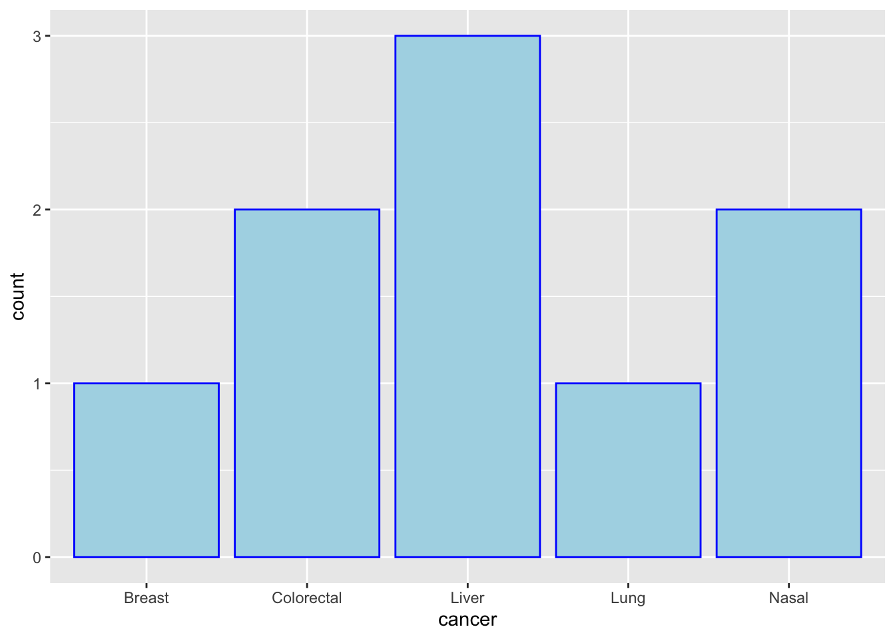
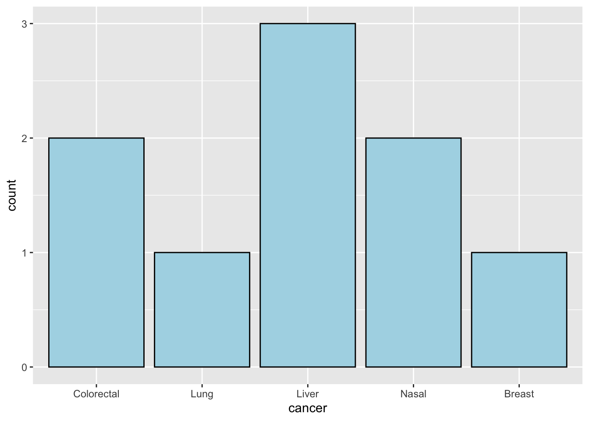

library(tidyverse)Factors
1 Libraries
2 Creating factors
2.1 defaults to alphabetical
# factor is a function that creates a factor variable
chvec <- (c("apples","oranges","bananas"))
fch1 <- factor(chvec)
fch1 # note: levels are alphabetical[1] apples oranges bananas
Levels: apples bananas oranges# or using as.factor from BaseR which does the same thing but
# is normally used to 'coerce' already defined datatype to factors
class(chvec)[1] "character"fch2 <- as.factor(chvec)
fch2[1] apples oranges bananas
Levels: apples bananas oranges2.2 specifies a level order
# you can specify ordered levels
fch3 <- factor(chvec, levels= c("apples","oranges","bananas"))
fch3[1] apples oranges bananas
Levels: apples oranges bananas3 tidyverse::as_factor retains order
# another example of factor levels
bloodtypes <- c("O","A","B","AB")
factor(bloodtypes)[1] O A B AB
Levels: A AB B Oas.factor(bloodtypes)[1] O A B AB
Levels: A AB B Oas_factor(bloodtypes)[1] O A B AB
Levels: O A B AB- the
Levelsdefault to an alphabetical sequence, but - if I want to list factors Levels by the order in which they first appear
- you can define levels explicitly with factor(., levels=xxx)
- you can use as_factor from tidyverse which will retain the order
- hence, good idea to use
as_factor
3.1 (specify factor order)
# method 1
# specified levels
bt1 <- factor(bloodtypes,
levels=c("O","A","B","AB"))
levels(bt1)[1] "O" "A" "B" "AB"# method 2
# using as_factor (instead of as.factor from baseR)
# will retain the original factor order.
# better than using relevel or fct_reorder
bt2 <- as_factor(bloodtypes)
levels(bt2)[1] "O" "A" "B" "AB"4 Ordering factors for ggplots
# problems when you want to plot the categorical variable
# in a certain (original) order
tb <- read_csv("cancer, age, sex
Colorectal, 66, M
Lung, 29, M
Liver, 21, F
Nasal, 17, M
Colorectal, 55, F
Nasal, 31,F
Breast, 37, F
Liver, 55, M
Liver, 63, F
")
tb1 <- tb
tb1$cancer <-as.factor(tb1$cancer)
levels(tb1$cancer)[1] "Breast" "Colorectal" "Liver" "Lung" "Nasal" ggplot(tb1, aes(x=cancer))+
geom_bar(fill="lightblue",color="blue")
- or I can order the factor cancer in its original position
library(tidyverse)
tb2 <- tb
tb2$cancer <- as_factor(tb2$cancer)
levels(tb2$cancer)[1] "Colorectal" "Lung" "Liver" "Nasal" "Breast" ggplot(tb2, aes(x=cancer))+
geom_bar(fill="lightblue",color="black")
5 Renaming Factors
tb3<-read_csv("
Dept, Views
National Cancer Center, 683
National Heart Center Singapore, 697
National Eye Center, 534
")
tb3$Dept <- as_factor(tb3$Dept) # retains order
levels(tb3$Dept)[1] "National Cancer Center" "National Heart Center Singapore"
[3] "National Eye Center" tb3$Dept <- fct_recode(tb3$Dept,
NCC="National Cancer Center",
NHCS = "National Heart Center Singapore",
NEC = "National Eye Center")
levels(tb3$Dept)[1] "NCC" "NHCS" "NEC" tb3# A tibble: 3 × 2
Dept Views
<fct> <dbl>
1 NCC 683
2 NHCS 697
3 NEC 534